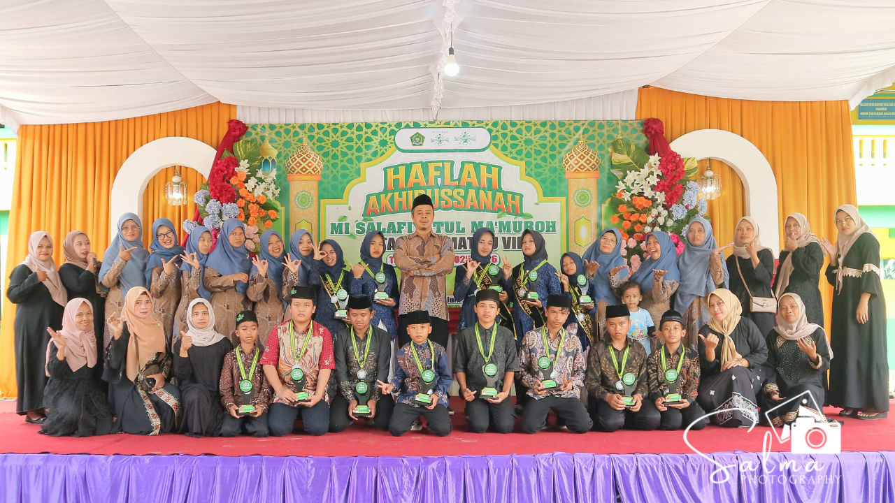

MI Salafiyatul Ma'muroh Paesan sukses menyelenggarakan acara Akhirussanah Tahun Ajaran 2025/2026 pada hari Minggu, 14 Juni 2026. Acara yang menjadi momen pelepasan bagi siswa-siswi kelas 6 ini berlangsung dengan penuh khidmat dan kebahagiaan. Orang tua siswa, dewan guru, dan seluruh keluarga besar madrasah berkumpul untuk merayakan capaian pendidikan para siswa yang telah menuntaskan masa belajarnya di bangku Madrasah Ibtidaiyah.
Kemeriahan acara terasa begitu istimewa dengan berbagai pertunjukan dan pentas seni yang dipersembahkan langsung oleh siswa-siswi MI Salafiyatul Ma'muroh. Panggung acara diisi dengan penampilan yang memukau, mulai dari tari islami yang menyentuh hati, drama musikal yang mengangkat tema penting tentang "Anti Bullying", hingga pertunjukan tari topeng ireng yang energik. Setiap penampilan menunjukkan hasil dari latihan rutin dan bakat seni yang diasah selama kegiatan ekstrakurikuler di madrasah.
Kepala MI Salafiyatul Ma'muroh menyampaikan apresiasi setinggi-tingginya kepada para siswa yang telah tampil luar biasa. Beliau mengungkapkan bahwa Akhirussanah bukan sekadar seremoni kelulusan, melainkan wujud rasa syukur atas perjalanan panjang siswa dalam menimba ilmu. Pesan moral yang disampaikan melalui drama musikal anti-bullying juga menjadi sorotan penting, yang diharapkan dapat menjadi bekal karakter bagi siswa agar terus menebar kebaikan di jenjang pendidikan berikutnya.
Acara ditutup dengan prosesi pelepasan yang mengharukan dan sesi foto bersama sebagai tanda kasih sayang antara guru dan murid. Pihak madrasah berharap bahwa bekal ilmu dan pengalaman berkesan selama di MI Salafiyatul Ma'muroh akan menjadi pondasi yang kuat bagi siswa untuk terus meraih prestasi di masa depan. Seluruh pihak yang terlibat merasa bangga atas terselenggaranya acara ini dengan lancar, membawa semangat optimisme untuk menyambut babak baru bagi para lulusan.
← Kembali ke Beranda